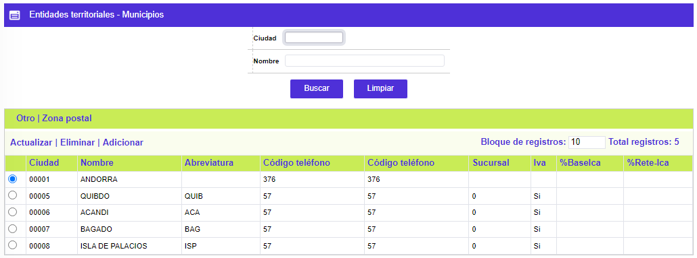
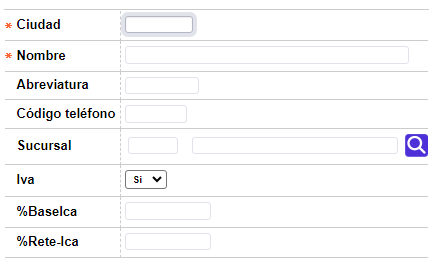
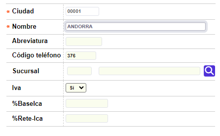

Entidades territoriales
Municipios: Tercer nivel de la división política, presenta un campo en el que aparece el país y departamento (estado o provincia) a los que pertenece; permite indicar los municipios a los que la normatividad tributaria permite exonerar el cobro del impuesto del IVA, como las condiciones relacionadas con el impuesto de industria y comercio ICA.
El formulario contiene las opciones Actualizar, Eliminar, y Adicionar. Adicionalmente, cuenta con la opciones Otros y Zona postal, y se puede regresar a la opción Departamentos a través del botón volver de la parte superior izquierda.

Adicionar: Si el usuario invoca la opción Adicionar se despliega un formulario con los siguientes campos:

|
Ciudad |
Campo alfanumérico de cinco dígitos, obligatorio, que contiene el código asignado a cada municipio (cantón). |
|
Nombre |
En este campo alfanumérico de 35 posiciones, obligatorio, se registra el nombre del municipio (cantón) asociado al código anterior. |
|
Abreviatura |
Campo que contiene el mnemónico o nombre abreviado del municipio, dato que puede ser desplegado por el sistema en las consultas o reportes. |
|
Codigo teléfono |
Este campo alfanumérico de cuatro dígitos, no obligatorio, contiene el código telefónico identificador del área. |
|
Sucursal |
Campo que contiene el código de sucursal de radicación asociado a cada municipio lo que permite controlar que la dirección base del cliente se relacione consistentemente con una determinada sucursal. |
|
IVA |
En este campo la entidad señala aquellos municipios en los que por norma gubernamental no debe cobrarse el Impuesto de Valor Agregado IVA por los consumos en ellos realizados. |
|
%BaseIca |
Campo numérico de 3 enteros y 2 decimales, en el que la entidad registra el porcentaje base sobre el que se aplicará la tasa de retención del impuesto de industria y comercio ICA, impuesto de carácter exclusivo de algunos municipios, estimado sobre las utilizaciones en ellos realizadas. |
|
%Rete-Ica |
Campo numérico en el que se registra la tasa a retener sobre el impuesto de industria y comercio ICA, acorde con la base definida. Este porcentaje se ingresa nominalmente con enteros y dos posiciones decimales, y el programa lo interpreta como un valor por mil; así por ejemplo, si la tasa a determinada fecha corresponde al 4,14 por mil, se debe digitar exactamente ese mismo valor en el campo (un entero y dos decimales). |
Actualizar: Si el usuario invoca la opción Actualizar se despliega un nuevo formulario en el cual los únicos campos modificables son: Nombre, Abreviatura, Código teléfono, Suc ursal, Iva, %BaseIca, y %Rete-Ica.
